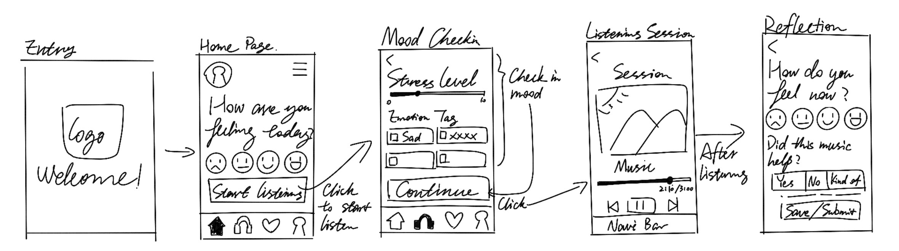
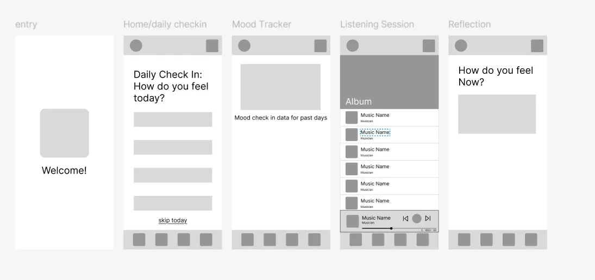
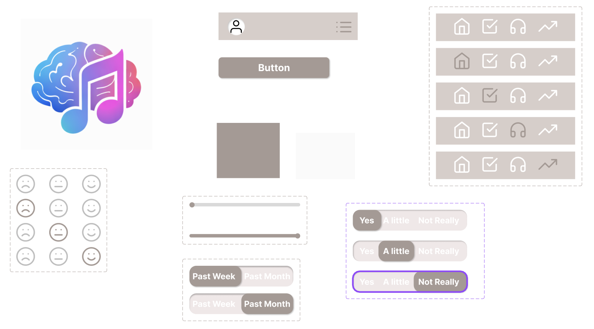
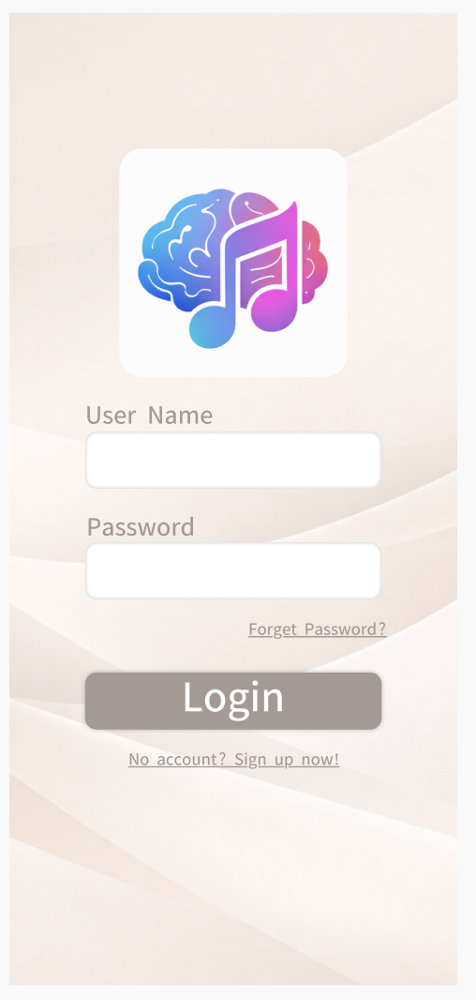
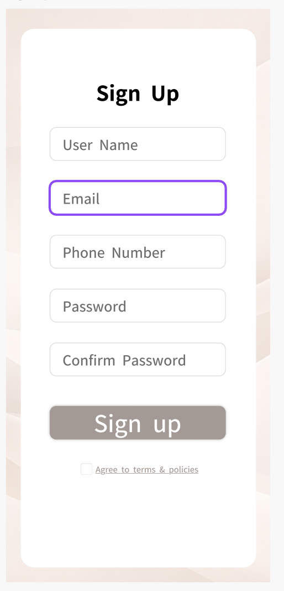
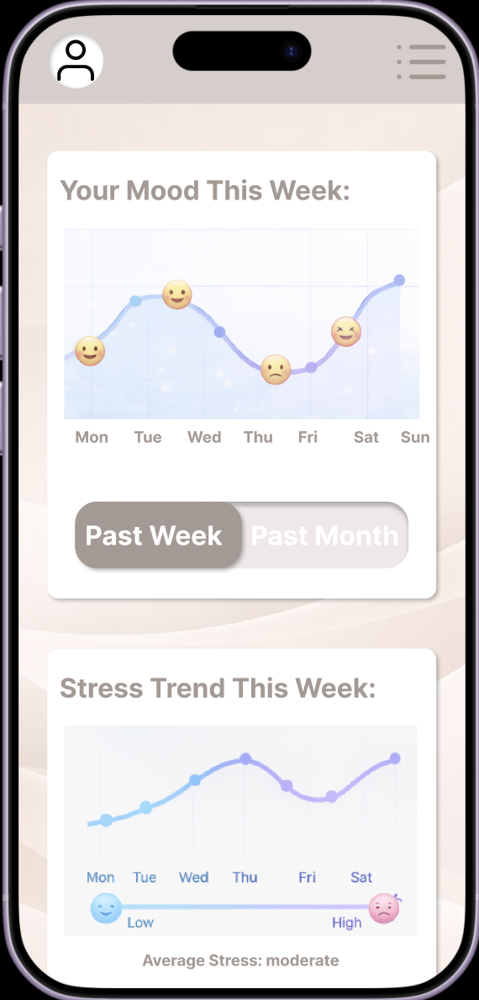
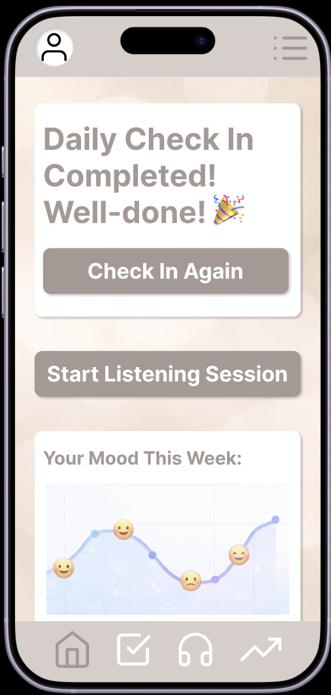
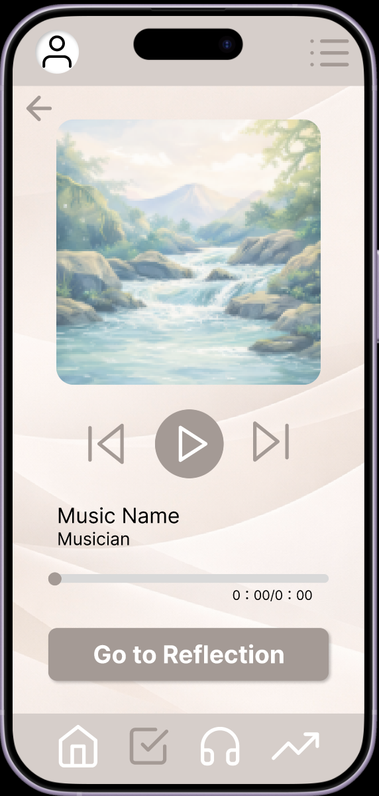

In order to support the common habits and needs of our target audience of students, MindMelody includes the following features:
Basic Features
- The system allows users to create and manage their user profile with a username, password, and email.
- The system allows users to export and share playlists with others.
- The system allows users to view their listening history and mood tracking data such as recent trends and patterns.
- Users can play and listen to music on the application.
Main Viable Product
- Users log their mood using a slider input, selection input, or provide written inputs.
- The system generates a personalized music playlist based on user data.
- After a listening session, users evaluate the playlist and their mood to refine their music.
Low-Fidelity Wireframes

Mid-Fidelity Wireframes

High-Fidelity Wireframes
Figma Components used:

Login View

Sign-Up View

Daily Check-in View

Playlist View

Reflection View

Mood Tracker View

Completed Check-in View

Listening Session View

Prototype Demonstration